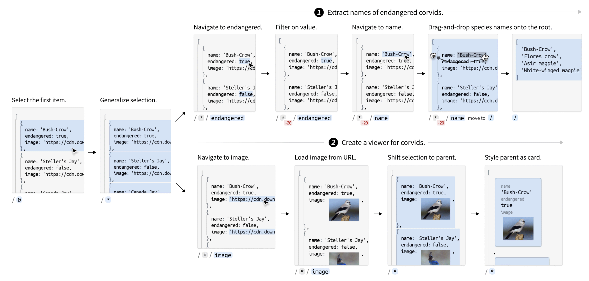

Presented at UIST 2025: PDF DOI Video
Many end-user programming tasks require programmatically processing JSON, wrangling it from one format to another or building interactive applications atop it. But end-users are impeded by the indirectness and steep learning curve of textual code. We present Sculpin, a direct-manipulation environment supporting a broad range of JSON-transformation tasks. A user of Sculpin transforms JSON data step by step, recording a program in the process. Sculpin makes three design commitments to ensure directness and versatility: (1) steps are small and precise, not inferred; (2) steps are general-purpose and open to re-appropriation; (3) steps operate on JSON itself, rather than on a limited intermediate representation. To support these commitments, Sculpin introduces a mechanism of sculptable selections: the user can direct their action by guiding a selection on top of the data through small steps like generalization and hierarchical navigation. Sculpin also extends JSON with embedded interface elements like form inputs and buttons, allowing applications to be sculpted incrementally from source data. We demonstrate the breadth and directness of Sculpin in use-cases ranging from wrangling data to building applications. We evaluate Sculpin through a heuristic analysis, situating it in a broad space of programming systems and surfacing limitations such as difficulties editing preexisting programs.